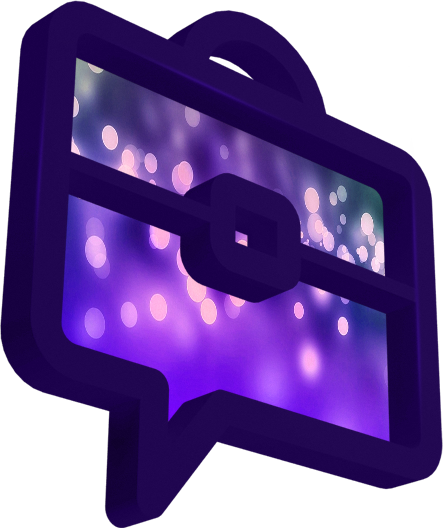
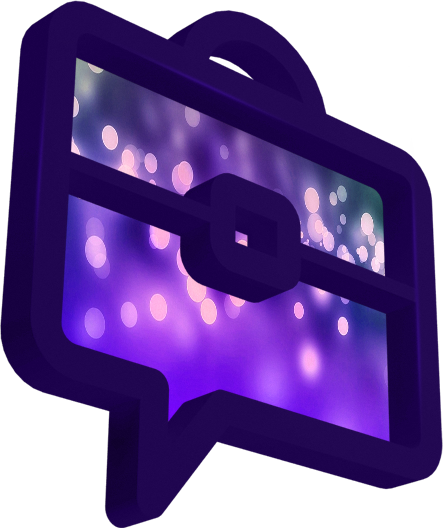

Меня зовут Олег Торбосов, я предприниматель и ведущий
ток-шоу Бизнес-хакеры.
В качестве гостей на шоу я приглашая предпринимателей,
известных и не очень, молодых и взрослых. Они делятся
чит-кодами и техниками, которые помогли им сломать
стереотипы мышления и добиться результатов.
В рамках выпуска мы узнаем их образ жизни, места, где они
любят отдыхать, что любят есть и что пить, в какие бренды
одеваются, где живут. Просим поделиться лайф-хаками и
секретами ведения бизнеса.

 

24 января.
Федор Овчинников.
доставляет пиццу дронами, ведет интернет блог "Сила ума" и является героем книги "И ботаники
делают бизнес".
Бизнес хакеры с Алексеем Галицким

Опубликовано: 6 янв. 2015 г.
Устраивайтесь поудобнее в своем теплом кресле и смотрите новый выпуск ток-шоу Олега Торбосова "Бизнес-Хакеры".
Сегодня у меня в гостях Алексей Галицкий, основатель и руководитель компании UBC.
Бизнес хакеры с Аязом Шабутдиновым

Опубликовано: 23 дек. 2014 г.
Устраивайтесь поудобнее в своем теплом кресле и смотрите новый выпуск ток-шоу Олега Торбосова "Бизнес-Хакеры."
Сегодня у меня в гостях Аяз Шабутдинов, основатель Like-холдинга.